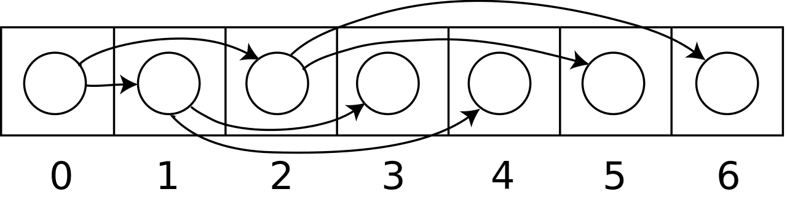
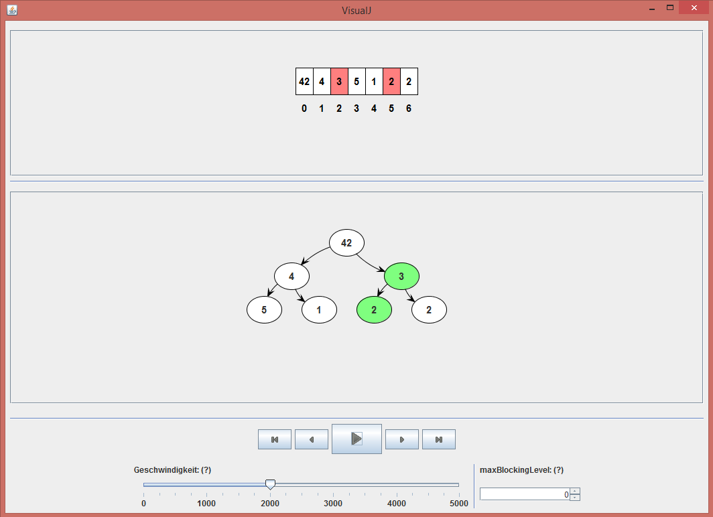

Alice hat von ihrem Lehrer Herr Bob eine weitere, anspruchsvollere Aufgabe bekommen: nämlich Heap sort zu implementieren und ihren Klassenkameraden zu erklären.
Der Heap-Sort-Algorithmus sieht folgendermaßen aus:
public static void heapSort(int[] arr) {
for (int i = (arr.length / 2) - 1; i >= 0; i--) {
siftDown(arr, i, arr.length, log);
}
for (int i = arr.length - 1; i > 0; i--) {
swap(arr, i, 0);
siftDown(arr, 0, i);
}
}
private static void siftDown(int[] arr, int i, int n) {
while (i <= (n / 2) - 1) {
int childIndex = ((i + 1) * 2) - 1;
if (childIndex + 1 <= n - 1) {
if (arr[childIndex] < arr[childIndex + 1]) {
childIndex++;
}
}
if (arr[i] < arr[childIndex]) {
swap(arr, i, childIndex);
i = childIndex;
} else {
break;
}
}
}Bei Heap sort wird das zu sortierende Array als impliziter Baum behandelt. Der Knoten mit dem Index i hat hierbei bis zu zwei Kindknoten 2i+1 und 2i+2:

Bildquelle: Wikipedia
Deshalb will Alice diesmal das Array zweifach darstellen: Einmal wie vorher als einfache Zahlenfolge und einmal als binären Baum:
public static void heapSort(int[] arr) {
Breakpoints.reset();
Window win = new Window();
IntArrayLogger log = new IntArrayLogger(arr);
win.addVisualizer(log);
*1 win.addVisualizer(new ImplicitHeapVisualizer(log));
win.setVisible(true);
Breakpoints.breakpoint();
for (int i = (arr.length / 2) - 1; i >= 0; i--) {
siftDown(arr, i, arr.length, log);
}
for (int i = arr.length - 1; i > 0; i--) {
swap(arr, i, 0);
siftDown(arr, 0, i, log);
*2 log.update(arr);
*4 Breakpoints.breakpoint(0);
}
}
private static void siftDown(int[] arr, int i, int n, IntArrayLogger log) {
while (i <= (n / 2) - 1) {
int childIndex = ((i + 1) * 2) - 1;
if (childIndex + 1 <= n - 1) {
if (arr[childIndex] < arr[childIndex + 1]) {
childIndex++;
}
}
if (arr[i] < arr[childIndex]) {
swap(arr, i, childIndex);
i = childIndex;
} else {
break;
}
*3 log.update(arr);
*4 Breakpoints.breakpoint(1);
}
}Hierzu fügt sie dem Fenster einfach einen weiteren Visualizer, nämlich den ImplicitHeapVisualizer hinzu (*1).
Übergibt man dem Fenster einfach einen Logger, wie in der Zeile darüber, wird der Standardvisualizer des Loggers verwendet. Das ist bei allen ArrayLoggern der ArrayVisualier, der das Array als einfache Zahlenfolge darstellt.
Man aber auch, wie hier, einen eigenen Visualizer erstellen und diesen übergeben.
Das war schon alles. Wieder kann Alice wie vorher nach jedem Schritt des Algorithmus den Wert im Logger updaten und einen Breakpoint setzen (*2 & *3).
Ein weiteres Feature von VisualJ sind Breakpoint-Levels (*4). Wenn Alice das Programm in gröberen Schritten durchgehen und die Breakpoints mit Level 1 überspringen will, kann sie im Fenster das maxBlockingLevel auf 0 setzen. Will sie das Programm in kleinere Schritte unterteilen, setzt sie das maxBlockingLevel auf 1.

Wie man sieht, wird das Array oben als Zahlenfolge und darunter als impliziter Heap dargestellt. Alles andere funktioniert wie gehabt: man kann das Programm von alleine laufen lassen oder Schritt für Schritt durchgehen.
{kind=link}